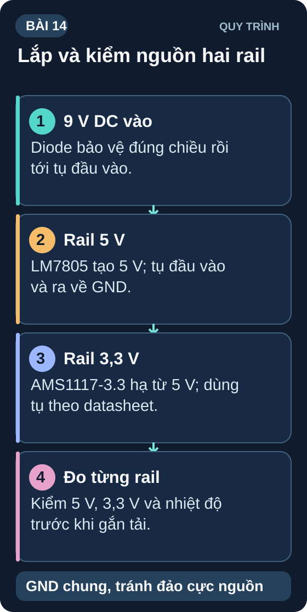
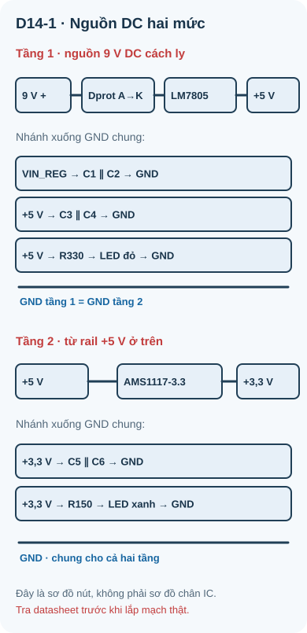
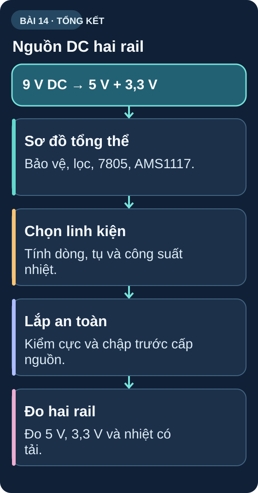

Ôn Tập Tuần 2 & Mini Project: Mạch Nguồn DC Hoàn Chỉnh
Tổng hợp kiến thức tụ điện, cuộn cảm, diode và LDO — xây dựng mạch nguồn DC đầy đủ tính năng: bảo vệ cực tính, lọc nhiễu, ổn áp kép.

1. Ôn tập nhanh Tuần 2
| Câu hỏi | Đáp án (che lại trước) |
|---|---|
| Tụ 100nF mã số trên thân? | "104" (10 × 10⁴ pF = 100,000 pF = 100 nF) |
| τ của mạch RC: R=22kΩ, C=10µF? | τ = 22000 × 0,00001 = 0,22 giây |
| Tần số cắt RC: R=10kΩ, C=100nF? | f_c = 1/(2π×10000×0,0000001) = 159 Hz |
| Cảm kháng X_L = ? khi f=50Hz, L=100mH? | X_L = 2π×50×0,1 = 31,4 Ω |
| Cần gì khi ngắt dòng relay/motor? | Freewheeling diode song song với cuộn dây |
| V_f diode silicon (1N4007)? | ≈ 0,6–0,7V |
| V_f diode Schottky? | ≈ 0,2–0,3V |
| Cầu chỉnh lưu 4 diode: V_peak=12V → V_DC? | V_DC ≈ 12–1,4 = 10,6V (sau tụ lọc lớn) |
| Zener cắm thuận hay nghịch khi ổn áp? | Nghịch (cathode lên phía áp cao, anode xuống GND) |
| LM7805 cần V_in bao nhiêu để còn điều áp? | Phụ thuộc part, tải và nhiệt; TI LM7805 Rev. L nêu điều kiện line regulation từ 7,5 V tại chân IN trong bảng đặc tính. Tính cả sụt áp diode/dây. |
2. Mini Project Tuần 2: Mạch nguồn DC Hoàn chỉnh
- Nguồn vào: adapter DC cách ly 9 V có giới hạn dòng; 12 V chỉ dùng khi đã kiểm tra nhiệt
- Đầu ra 1: 5 V, tải thử tối đa 100 mA (LM7805)
- Đầu ra 2: 3,3 V, tải thử tối đa 50 mA (AMS1117-3.3, lấy từ rail 5 V)
- Bảo vệ cực tính: diode 1N4007 ở dây (+) đầu vào
- Lọc nhiễu đầu vào: 100µF + 100nF song song
- Lọc đầu ra 5 V: 100 µF + 100 nF; đầu ra AMS1117: 22 µF tantalum + 100 nF theo datasheet đúng mã
- LED chỉ thị nguồn: LED đỏ (5V) + LED xanh (3,3V) với R hạn dòng phù hợp
- Đo kiểm: điện áp, ripple (nếu có oscilloscope), nhiệt độ IC
2.1 Sơ đồ mạch tổng thể
Đây là bài thiết kế và lập kế hoạch thử tải nhỏ: mục tiêu tải ngoài 5 V là 100 mA, 3,3 V là 50 mA. Dòng đi qua LM7805 gồm cả tải rail 5 V lẫn dòng cấp cho AMS1117. Ở nguồn 12 V, dù tổng tải chỉ khoảng 150 mA, LM7805 vẫn có thể tiêu tán gần 1 W. Trước khi chuyển sang breadboard thật, xác minh đúng part/package, nguồn, tụ, pinout, điện áp tại chân IN, tính nhiệt và có người duyệt; nếu thiếu, chỉ dùng sơ đồ để tính hoặc mô phỏng. Không lấy công suất danh định của IC làm công suất cho phép của cách lắp trên breadboard.

Đọc mô tả D14-1
9 V DC vào anode Dprot; cathode tạo VIN_REG đến IN LM7805. OUT LM7805 là rail +5 V, cấp IN AMS1117-3.3; OUT AMS1117 là +3,3 V. GND hai IC nối chung. C1/C2 từ VIN_REG về GND; C3/C4 từ +5 V về GND; C5/C6 từ +3,3 V về GND. Hai nhánh chỉ thị riêng: +5 V–R330–LED đỏ–GND và +3,3 V–R150–LED xanh lá–GND. Đây là sơ đồ nút; pinout xem D13-1/D13-2; tính nhiệt trước khi lắp.
2.2 Tính toán linh kiện
| Linh kiện | Giá trị | Lý do chọn |
|---|---|---|
| D_prot (bảo vệ cực tính) | 1N4007 | Sụt áp thuận thay đổi theo dòng; ước lượng 0,7 V để tính ban đầu, đo VIN_REG thực tế trước khi lắp tải. |
| C1 (bulk filter đầu vào) | 100µF/25V | Lọc ripple, ổn định điện áp đầu vào |
| C2 (decoupling đầu vào) | 100nF gốm | Lọc nhiễu tần số cao |
| C3, C4 (lọc đầu ra 5V) | 100µF + 100nF | Mắc song song OUT–GND để dự trữ năng lượng và cải thiện đáp ứng; đối chiếu datasheet đúng mã. |
| R_LED_đỏ (5V rail) | R = (5–2)/0,01 = 300Ω → chọn 330Ω | LED đỏ V_f=2V, I_f=10mA |
| C5, C6 (lọc đầu ra 3,3V) | 22µF tantalum + 100nF | OUT–GND sát AMS1117 của Advanced Monolithic Systems; loại tụ khác phải kiểm tra theo datasheet đúng mã. |
| R_LED_xanh (3,3V rail) | R = (3,3–2,1)/0,01 = 120Ω → chọn 150Ω | LED xanh lá V_f=2,1V, I_f=8mA |
2.3 Kế hoạch nối dây và kiểm tra có điều kiện
Lắp đường GND chạy suốt breadboard. Cắm D_prot (1N4007) — cathode (vạch) vào phía mạch.
Cắm C1 (100µF, đúng chiều +/-) và C2 (100nF) song song sau D_prot.
Cắm LM7805: chân 1 vào điểm sau D_prot+C1, chân 2 vào GND, chân 3 là 5V out.
Cắm C3 (100µF, đúng chiều) và C4 (100nF) từ 5V out xuống GND.
Nối LED đỏ + R330Ω từ 5V out xuống GND.
Cắm AMS1117-3.3 theo đúng mã: chân 3=IN từ rail 5 V, chân 1=GND, chân 2/tab=OUT 3,3 V. Kiểm tra chân trên datasheet trước khi nối nguồn.
Cắm C5 (22µF tantalum đúng cực), C6 (100nF) từ 3,3 V xuống GND. Nối LED xanh lá và R150Ω nối tiếp thành một nhánh từ 3,3 V xuống GND.
Continuity test: Kiểm tra VCC không short với GND trước khi cấp điện.
Nếu cổng phần cứng đã đạt: đặt giới hạn dòng nguồn thử theo BOM, cấp 9 V từ nguồn DC cách ly; đo VIN_REG, 5 V và 3,3 V trước khi nối tải ngoài. Nếu chưa đạt, mô phỏng/ước tính các rail và ghi các phép đo cần làm. Không dùng đầu ra này cấp ESP32 Wi-Fi: bài chỉ xét tải nhỏ, ESP32 cần thiết kế theo dòng đỉnh của module.
2.4 Bảng đo kiểm
| Điểm đo | Kỳ vọng | Đo được | P/F |
|---|---|---|---|
| V_in trước D_prot | 9–12V | _____ | — |
| V_in sau D_prot | V_in − V_F; V_F phụ thuộc dòng/nhiệt của diode thật | _____ | — |
| V_out 5V rail | 4,8–5,2V | _____ | _____ |
| V_out 3,3V rail | 3,2–3,4V | _____ | _____ |
| LED đỏ sáng? | Có | _____ | _____ |
| LED xanh sáng? | Có | _____ | _____ |
| Phân tích đảo cực đầu vào | D_prot nối tiếp dự kiến chặn dòng qua rail; chưa thử thật khi chưa có sơ đồ/BOM và phép duyệt | _____ | _____ |
3. Tổng kết Tuần 2
| Bài | Kiến thức cốt lõi | Kỹ năng thực hành |
|---|---|---|
| 8 | Tụ điện: cấu tạo, phân cực, đọc mã số | Nhận biết, đo tụ, kiểm tra chiều |
| 9 | Mạch RC: τ, đường cong nạp/xả, RC filter | Đo V_C theo thời gian thực |
| 10 | Cuộn cảm: điện cảm H, cảm kháng X_L, voltage spike | Nhận biết cuộn cảm, biết dùng freewheeling diode |
| 11 | Diode: P-N, phân cực, chỉnh lưu, bảo vệ | Đo V_f, mạch bảo vệ cực tính |
| 12 | Zener: ổn áp tham chiếu, bảo vệ quá áp | Phân tích/mô phỏng mạch Zener trước khi đo thật |
| 13 | Ổn áp tuyến tính thường và LDO: LM7805, AMS1117, P_heat, tản nhiệt | Thiết kế nguồn 5 V + 3,3 V và lập kế hoạch đo có điều kiện |
| 14 | Tổng hợp + Mini Project | Mạch nguồn DC hoàn chỉnh với bảo vệ |
Tuần 3 bắt đầu với transistor BJT — linh kiện bán dẫn 3 chân, nền tảng của mọi mạch khuếch đại và công tắc điện tử. Hãy chuẩn bị thêm: transistor NPN BC547, BC337; PNP BC557; điện trở nhiều giá trị từ 1kΩ đến 100kΩ; nút nhấn; buzzer nhỏ 5V.
1: "222" = 22 × 10² = 2,200 pF = 2,2 nF. Tụ hóa cắm ngược: oxide điện môi bị phá, tụ dẫn dòng lớn → nóng, phình, nổ.
2: τ = 33000 × 0,000047 = 1,551 s. V_C(3τ) = 5×(1–e⁻³) = 5×0,950 = 4,75V
3: f_c = 1/(2π×4700×0,00000001) = 1/0,0000295 = 3,386 Hz ≈ 3,4 kHz
4: X_L(1kHz) = 2π×1000×0,047 = 295 Ω. X_L(10kHz) = 2π×10000×0,047 = 2,953 kΩ. Tần số tăng 10× → X_L tăng 10×.
5: Cả hai chiều đều ~0V → diode bị ngắn mạch (shorted). Thay diode mới.
6: V_DC ≈ V_peak – 2×V_f_Schottky = 15 – 0,6 = 14,4V
7: R_s = (9–5,1)/0,015 = 260Ω → chọn 270Ω. I_Z = (9–5,1)/270 = 14,4mA. P_Z = 5,1×0,0144 = 73,4 mW << 500mW ✓
8: P_heat xấp xỉ (15−5)×0,6 = 6 W, chưa tính dòng tĩnh. Công thức T_j=T_a+P×R_θJA cho thấy thiết kế không tản nhiệt có thể vượt giới hạn rất xa; không xem nhiệt độ ngoại suy là nhiệt độ chip thật vì giới hạn nhiệt có thể tác động. Phải tra R_θJA theo package/PCB hoặc tản nhiệt thật và kiểm T_j,max của đúng part; chưa thể kết luận loại tản nhiệt từ số 6 W một mình.
9: LM7805 là ổn áp 5 V thông thường, không tạo rail 3,3 V và USB 5 V không đủ headroom cho nó. AMS1117-3.3 là một ứng viên từ rail 5 V, nhưng datasheet AMS cho dropout tối đa 1,3 V ở 0,8 A, nên phải kiểm V_IN tối thiểu ngay tại chân IC dưới tải/dây, tụ ổn định, dòng đỉnh ESP32 và nhiệt. Không suy USB 4,7 V luôn đủ cho mọi tải/module.
10: (a) AMS1117 cắm sai chân — đối chiếu package/pinout; (b) C5 tantalum mắc sai cực hoặc C5/C6 bị chập/hỏng — kiểm đúng loại tụ và đo khi đã ngắt nguồn; C6 gốm 100 nF không có cực; (c) IN của AMS1117 mất rail 5 V — kiểm đường nối khi ngắt nguồn; (d) IC hoặc tải hỏng — đo V tại IN/OUT dưới điều kiện nguồn giới hạn dòng đã được duyệt.
Sơ đồ tổng hợp Bài 14

Đọc nội dung sơ đồ bằng chữ
- Sơ đồ tổng thể: Bảo vệ, lọc, 7805, AMS1117. (mục Sơ đồ mạch tổng thể).
- Chọn linh kiện: Tính dòng, tụ và công suất nhiệt. (mục Tính toán linh kiện).
- Kiểm trước khi lắp: Rà cực, chập, part, nguồn và nhiệt; chỉ lắp sau khi duyệt mạch. (mục Kế hoạch nối dây và kiểm tra có điều kiện).
- Kế hoạch đo rail: Ghi mức cần kiểm tại 5 V, 3,3 V và nhiệt theo tải; chưa ghi số đo thật. (mục Bảng đo kiểm).